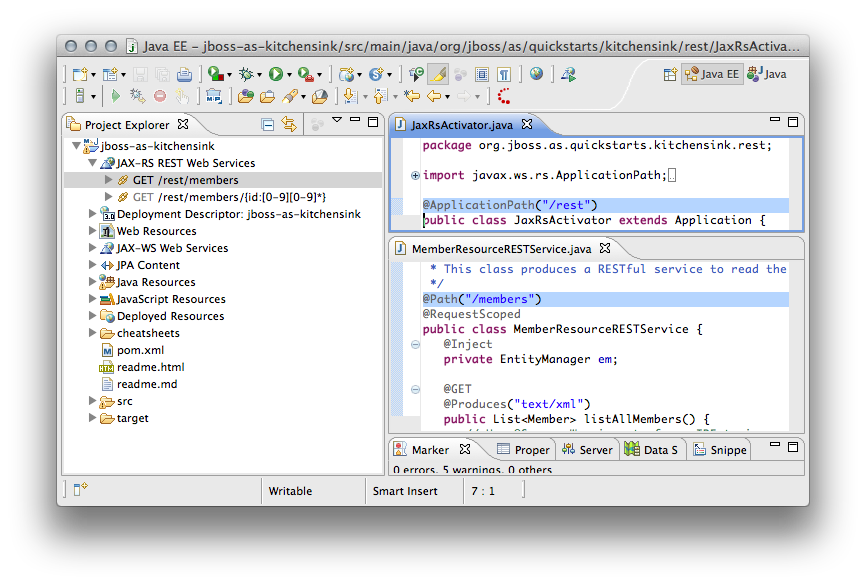

|
Support for javax.ws.rs.core.Application subclass annotated with @ApplicationPath is now available, along with support for standard JEE6 overwrite in the web app deployment descriptor. The JAX-RS Tooling will include the @ApplicationPath annotation value in your endpoints' URI Path Template if you provide a JAX-RS Application class as below:
@ApplicationPath("/mypath")
public class MyApplication extends Application {
...
}
Or if you define the application's root path for the JAX-RS endpoint in the web application's web.xml in the one of the following manners:
<servlet-mapping>
<servlet-name>com.acme.MyApplication</servlet-name>
<url-pattern>/hello/*</url-pattern>
</servlet-mapping>
or
<servlet-mapping>
<servlet-name>javax.ws.rs.core.Application</servlet-name>
<url-pattern>/hello/*</url-pattern>
</servlet-mapping>
As defined in the JAX-RS 1.1 specification, the web.xml approach takes precedence over the annotation-based configuration.

Related Jira
|